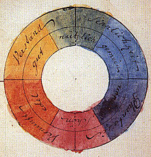
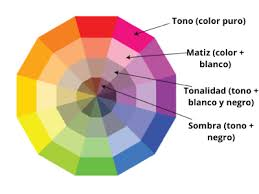

Se conoce como Teoría del color a un conjunto de reglas básicas que rigen la mezcla de colores para conseguir efectos deseados, mediante la combinación de colores o pigmentos. Es un principio de gran importancia en el diseño gráfico, la pintura, la fotografía, la imprenta y la televisión, entre otras áreas visuales.
Por ejemplo, el poeta y científico alemán prerromántico Johann Wolfgang von Goethe (1749-1832) en su libro Teoría de los colores de 1810 proponía ya un círculo de color, basándose en los estudios de la materia del propio Isaac Newton. Otro caso conocido es el de Wilhelm Ostwald (1853-1932), químico y filósofo alemán. Uno de los principales insumos de toda Teoría del color es el círculo cromático. Se trata de una representación circular de todos los colores del espectro visual, organizados de manera tal que los colores contrarios se enfrenten y los colores complementarios estén próximos el uno al otro. El círculo cromático permite identificar los colores primarios o puros, y aquellos que se consideran derivados, o sea, fruto de la mezcla de colores.
El modelo de color RGB se llama así debido a sus colores primarios: rojo, verde y azul (Red, Green, Blue, en inglés), a partir de los cuales se compone el resto. Es un sistema de color aditivo, en el que los colores deben sumarse para producir uno nuevo. Las excepciones son el negro, que se produce en ausencia de luz (y por ende, de color) y el blanco que se produce en presencia de todos los colores, recomponiendo el espectro. Este sistema es el empleado en la mayoría de los televisores, monitores de computador, proyectores de video, etc.
De acuerdo a este tipo de estudios del color, a cada uno se le pueden atribuir distintas propiedades, como son:
Matiz. También llamado “croma”, alude al color en sí mismo, lo que nos permite distinguir un color de otro diferente.
Luminosidad. También llamada “valor”, se refiere a la cantidad de luz presente en el color, o sea, si es más claro o más oscuro, lo que equivale a decir si está más cerca del negro o del blanco.
Saturación. Básicamente se refiere a la pureza del color, o sea, la concentración de gris presente en un color en un momento determinado. Mientras más gris posea, menos puro será y menor será su saturación, viéndose como si estuviera sucio, opaco.
